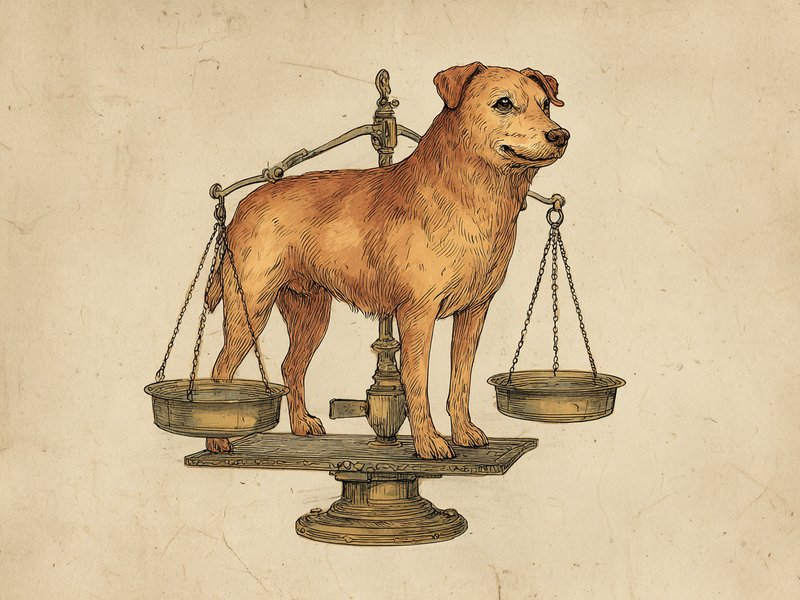

体重の数字だけでなく体型で見る「ボディコンディションスコア」の考え方。 How is a pet's "ideal weight" actually determined? Vets look beyond the number on the scale — body shape and feel matter just as much.
犬猫の標準体重に一律の正解はなく、獣医師は体重の数字だけでなく「ボディコンディションスコア(BCS)」で体型そのものから適正体重を判断します。
🔍 ちょっと寄り道:動物同士に相性があるように、人同士にも相性があります。気になった方は相性診断を試してみてください。
「標準体重〇kg」という決まった正解はない
結論から言うと、犬猫の標準体重に「この子なら何kg」という一律の正解はなく、個体ごとの幅がとても大きいのです。人間の身長・体重からBMIを計算するのとは違い、犬や猫の標準体重には犬種・猫種、骨格の大きさ、性別、個体差によって非常に幅があります。同じ「柴犬」でも骨太な子と華奢な子では適正体重が数kg変わることもあるほどです。本サイトの体重換算ツールで「標準・目標体重」を任意入力にしているのも、この個体差の大きさを踏まえてのことです。
獣医が使う「ボディコンディションスコア(BCS)」
獣医師が使うBCSは、肋骨や腰のくびれを見た目と触診で5段階または9段階に評価し、体型そのものから適正体重を判断する方法です。体重の数値だけに頼らないこの評価法は実際の動物病院でも広く使われており、肋骨・腰のくびれのほかお腹のラインなども確認します。肋骨がうっすら触れて腰にくびれがある状態が「理想体重」とされ、肋骨が全く触れない状態は「肥満気味」、逆に骨がゴツゴツ浮き出ている状態は「痩せ気味」の目安とされています。
- 理想体重の目安:肋骨がうっすら触れて、腰にくびれがある状態
- 肥満気味の目安:肋骨が全く触れない状態
- 痩せ気味の目安:骨がゴツゴツ浮き出ている状態
出典: World Small Animal Veterinary Association (WSAVA), "Global Nutrition Guidelines" (Body Condition Score chart) wsava.org
体重換算ツールと組み合わせて使うコツ
上手に使うコツは、動物病院で確認したBCSにもとづく適正体重を、ツールの目標体重として入力することです。本サイトの体重換算ツールは、現在の体重と標準・目標体重の比率から「人間に例えるとどのくらいの変化か」をイメージしやすくするための参考ツールです。標準体重が分からない場合でも、この方法なら「標準・目標体重」欄に根拠のある数字を入れられるので、より実感の湧く結果になります。体重の増減が気になる場合は、自己判断せず獣医師に相談することをおすすめします。
体重測定は、どのくらいの頻度で行うべき?
基本の目安は「健康な成犬・成猫なら月1回、成長期や体重が動きやすい時期はこまめに」と言われています。月に1回程度でも、続けていれば変化を把握しやすくなります。子犬・子猫の成長期は体重が短期間で大きく変わるため、動物病院の健診のタイミングなどでこまめに確認するのがおすすめです。また、ダイエット中や療法食に切り替えたとき、持病の経過を見ているときなどは、獣医師の指示に沿ってより頻繁に測定し、増減を記録しておくと診察時にも役立ちます。短期間で急に体重が増えたり減ったりした場合は、自己判断で様子を見ず、早めに動物病院に相談することをおすすめします。
猫の場合、上から見たときに肋骨の後ろで軽く「くびれ」ができているのが理想的な体型の目安のひとつと言われています。真上からのシルエットは、横から見るより体型の変化に気づきやすいポイントです。
ミニクイズ:標準体重は体重計の数字だけで判断できる?(タップして答えを見る)
こたえ×。獣医師は肋骨や腰のくびれを見た目と触診で評価する「ボディコンディションスコア(BCS)」を使い、体重の数値だけでなく体型そのものから適正体重を判断します。